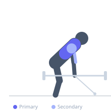
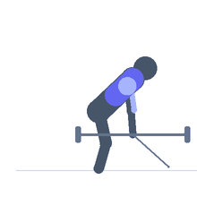

Exercise guide / Chest-Supported Landmine T-Bar Row
Chest-Supported Landmine T-Bar Row
The chest-supported landmine T-bar row combines the unique angled force vector of a landmine setup with the strict torso support of an incline bench. The chest pad eliminates lower back involvement entirely, directing all effort to the lats and upper back while the landmine angle provides a natural arc that accommodates shoulder mechanics better than many cable or barbell row variations.
Primary muscles
latissimus dorsi
rhomboid major
Secondary muscles
biceps brachii
trapezius middle
deltoid posterior
Equipment
No Equipment (Bodyweight)
Dumbbell (Fixed)
Optional
Hyperextension Bench (45°)


Starting position
- Position an incline bench (30-45 degrees) over the loaded end of a landmine barbell. Lie prone on the bench with the chest supported. Reach down and grasp the barbell end with both hands (or a V-handle attachment).
Setup
- Adjust bench position so that arms can reach full extension at the bottom. A V-grip handle over the bar sleeve makes bilateral gripping easier.
Steps
- Step 1: Lie prone on the incline bench, chest supported, arms extended holding the bar end.
- Step 2: Depress and retract both shoulder blades simultaneously.
- Step 3: Row the bar toward the chest by driving elbows back.
- Step 4: At the top, hold 1 second.
- Step 5: Lower under control to full arm extension.
Coaching cues
- Lead with the elbows, not the hands
- Chest stays in contact with the bench throughout
- Squeeze the blades together at the top
Breathing
- Exhale on the row. Inhale on the descent.
Range of motion
- Full arm extension to elbows behind torso line.
Tempo
- 2-1-3-0
Common mistakes
- Head craning forward — keep neck neutral against the bench pad
- Insufficient lat engagement — focus on depressing scaps before the pull
Safety
- Ensure the bench is stable and won't slide on the floor
- Secure the barbell in a landmine unit or corner before loading
Training
- hypertrophy: 8–15 reps
- strength: 5–8 reps
- hypertrophy: 3–4 sets
- Rest: {'hypertrophy': 90, 'strength': 120}